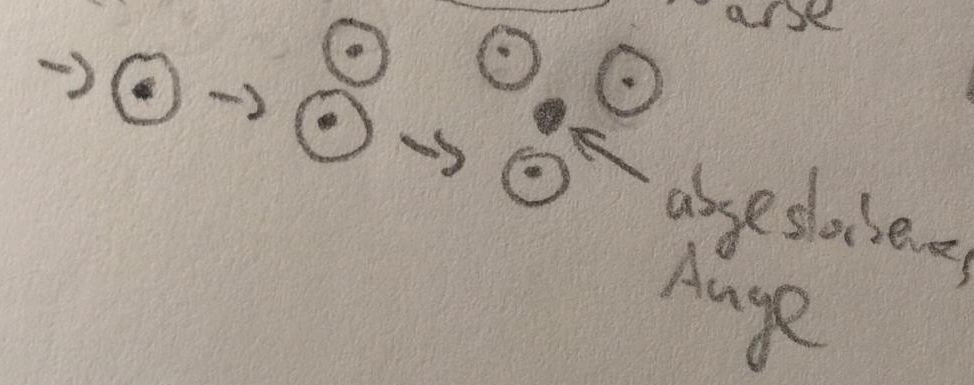

Quork

| Aussprache: | [ˈkvɒɹk] |
|---|---|
| Lebenserwartung: Durchschnittsgröße: Durchschnittsgewicht: |
253 Abläufe (ca. 110 Erden-Jahre) 180-200cm 50kg |
| Religion: | Versiegeltes Schloss |
Aussehen
Die Quork haben libellenartige, wasserabweisende Flügel
Werden die Flügel jedoch richtig nass, können die Quork zunänchst nicht fliegen.
Im Laufe ihres Lebens wachsen die Flügel weiter.
So werden die Quork ohne Flügel geboren und durchlaufen danach vier weitere Lebensphasen,
in denen ihnen jeweils zwei neue Flügel wachsen.
Ein jugendlicher Quork hat also zwei Flügel, ein Erwachsener vier.
Erreicht der Quork ein gehobenes Alter, so wachsen ihm zwei weitere Flügel.
Etwas seltener kann ein Quork ein so hohes Alter erreichen,
dass ihm noch einmal zwei Flügel wachsen und er also acht Flügel besitzt.
Wie bei den Flügeln, hängt die Anzahl der Augen von der Lebensphase der Quork ab.
Geboren werden die Quork mit einem Auge, dass jedoch zunächst geschlossen ist. Im Jugendalter öffnet es sich.
Ein Erwachsener hat zwei, ein älterer drei Augen. Im Gegensatz zu den Flügeln kommt auch in außerordentlichem Alter kein weiteres Auge hinzu.

Die Quork besitzen zwei Beine und zwei Arme. Sie haben keinen ausgeprägten Kopf, ihre Augen sitzen auf Armhöhe. Anstelle eines Mundes besitzen die Quork einen Beutel mit "Membran", der zur Nahrungsaufnahme und Kommunikation dient. Sie besitzen keinen Geschmackssinn.
Lebensweise
Die Quork sind in der Lage auf zwei Beinen zu laufen, sind jedoch schlechte Läufer und bevorzugen, auf vier Beinen zu gehen.
Wenn möglich, vermeiden sie das Laufen allerdings. Quork können nicht schwimmen.
Die Quork leben in Kolonien.
Die vier Lebensphasen sind Kind, jugendlich, erwachsen, alt und in seltenen Fällen sehr alt.
Lebensraum/Herkunft
Die Quork leben hauptsächlich an hohen Wasserfälle und Klippen mit vielen Felsvorsprüngen und Höhlen. Sie stammen vom Kontinent Loromoth, aber auch im Norden Wirinimas finden sich viele Kolonien.
Wrethh
Das Zentrum der quorkischen Kultur befindet sich in Cureg im Südwesten Loromoths, und wird von den Quork Wrethh [vrəθ] genannt. Diese Kolonie ist mit Abstand die Größte und praktisch die Hauptstadt der Quork. Sie besteht aus unzähligen bewachsenen Felsvorsprüngen und Höhlen. Überall fließen große und kleine Wasserfälle zwischen den Felsen hinab. Die Stadt ergrünt durch unzählige Büsche, Gräser und auch Laubbäume, die teils mächtige Höhen erreichen. Die blühende Natur bricht den Anblick der steinernen Felsen und kreirt ein besonderes Farbenspiel aus dem Grau des Steins, dem Grün der Pflanzen und dem Blau und Weiß des Wassers. Die Elben nennen sie Sarth-Tan, was sich mit "blaue Stadt" übersetzen lässt. Die Stadt ist sehr belebt, überall laufen und fliegen Quork herum. Die Fortbewegung in der Stadt gestaltet sich für Wesen, die nicht fliegen können, allerdings äußerst schwierig.
Nahrung
- Die Quork betreiben Landwirtschaft und legen Felder an
- Die Quork fangen Fische die den Wasserfall hinab schwimmen oder in der Nähe leben